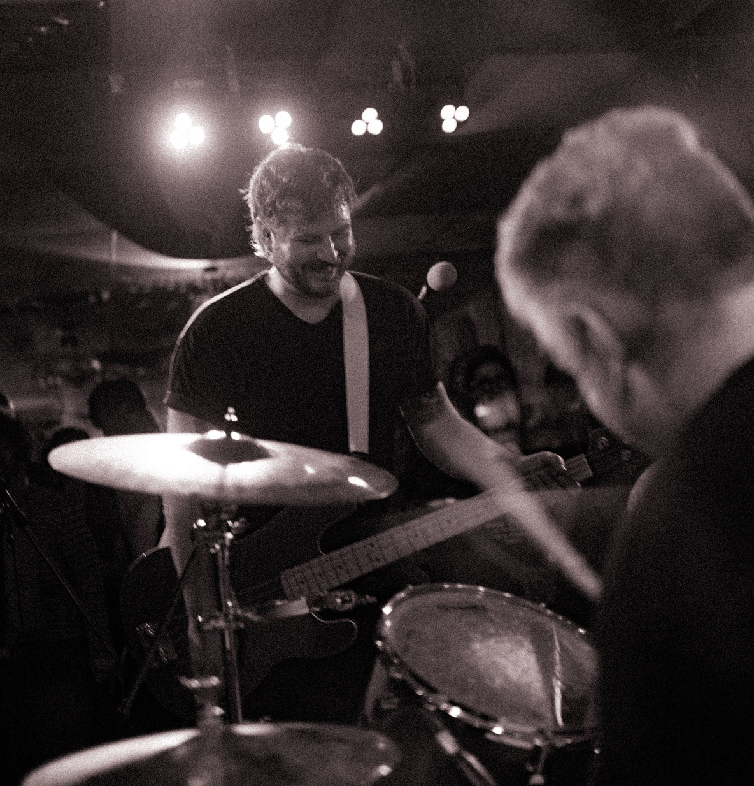
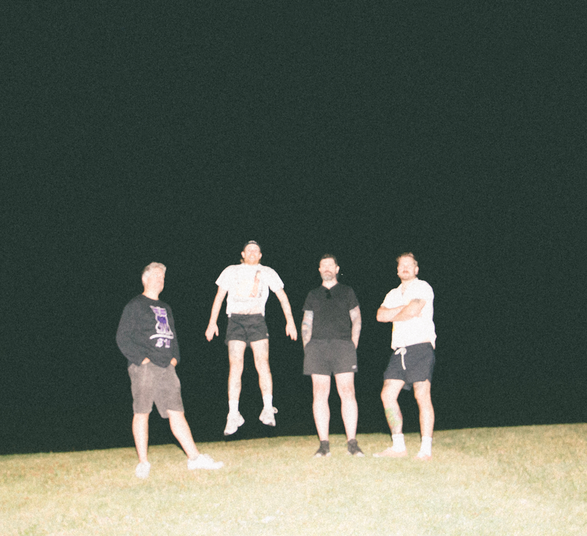
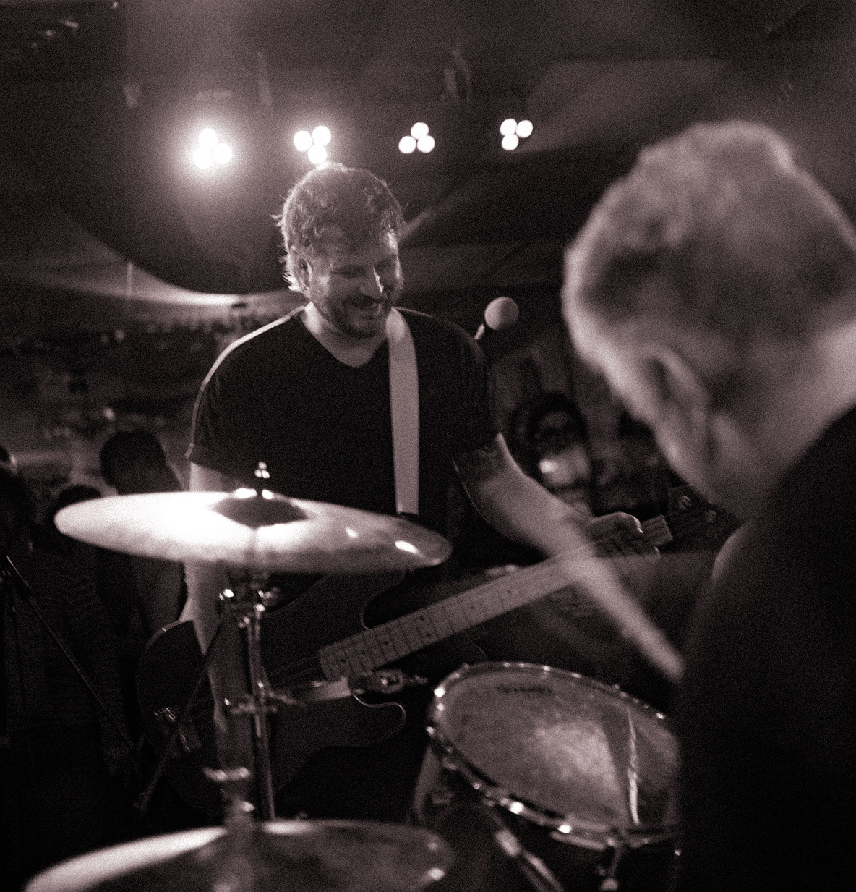
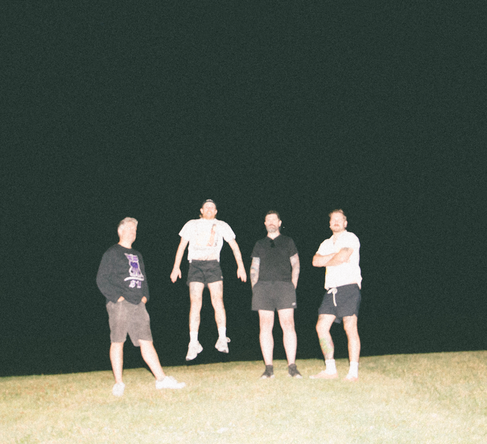

Meet Your New Faves Avec Plaisir
Born out of a tight-knit circle of friends and coworkers, the band wasted no time finding their stride, quickly moving from their Demos For Dave roots to a polished sound defined by high-energy riffs and "noodley" guitar work. While they are often tagged with the Midwest emo label, the band finds their true North in the raw, gang-vocal energy of French indie-punk, creating a style that is as technical as it is infectious.
Despite their self-proclaimed "sad boy" status, Avec Plaisir is driven by a love for fun, sincere songwriting and the thrill of the live show. From subtle nods to The Smiths to honest explorations of burnout in tracks like "FINAL_final-v7.psd," their music balances lightheartedness with genuine craft.
Top Math Rock Releases 2024
Okay, you don’t need an FFO for this one – you know you’re going to love it, and we do too. Each band here puts it all on the table, and normally on splits you see bands sort of rein in the risk, so you really get the sense that everyone really trusted each other here, and that every choice was made intentionally. While generally too difficult to manage, More Friends Than Fans is a four-gy we can wholeheartedly recommend.
Uproxx Best Emo Albums of 2022
Here’s pretty much all I could find out about Avec Plaisir: this is a band of 30-somethings from Montreal that plays a kind of mathy, melodic, and unmistakably “revival” type of emo that immediately brings hometown heroes Gulfer to mind. Why every one of their song titles begins with “J” is a mystery for another time. What I know about their debut is that An Album might not be as literal as the band name itself, which translates to “with pleasure.”
This isn’t the kind of music that makes 30-somethings start a band unless they had their hearts in it, and every second of An Album radiates with the joy of artists revisiting the music of their youth with a sense of purpose and chops that can only be accessed with age.
 


